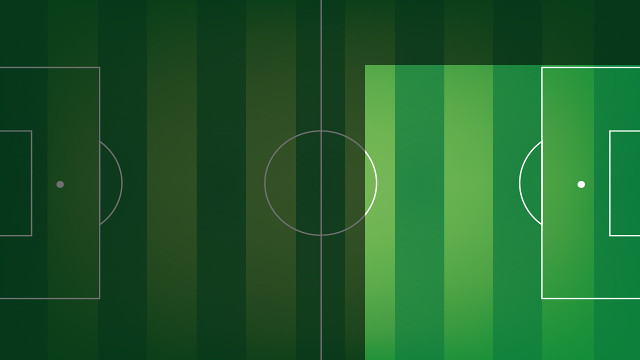

10
Lionel Messi
FORWARD

Leo Messi's footballing career started in 1995 at Newell's Old Boys, where he played until the year 2000. At the age of 13, Lionel Messi crossed the Atlantic to try his luck in Barcelona, and joined the Under 14s. Messi made spectacular progress at each of the different age levels, climbing through the ranks to Barça C, followed by Barça B and the first team in record time.
In the 2003-2004 season, when he was still only 16, Messi made his first team debut in a friendly with Porto that marked the opening of the new Do Dragao stadium.
The following championship-winning season, Messi made his first appearance in an official match on October 16, 2004, in Barcelona's derby win against Espanyol at the Olympic Stadium (0-1). With several first team players seriously injured, the services of several reserve team players were called upon, and Messi became a regular feature of Barça squads.
On May 1, 2005, Messi became the youngest player ever to score a league goal for FC Barcelona - against Albacete when he was only 17 years, 10 months and 7 days old. That record would eventually be beaten by Bojan Krkic.
At the Under 20 World Cup in Holland, Messi not only won the title with Argentina, but was also the leading goalscorer and was voted best player in the tournament. Aged 18 years, he had become one of the hottest properties in the world game. Shortly after, he made his first full international appearance in a friendly against Hungary.
His breakthrough came in the 2005-06 season, starting with an amazing performance in the Joan Gamper Trophy match against Juventus. He was also outstanding at the Santiago Bernabéu, in Barcelona's unforgettable 3-0 win, and also at Stamford Bridge, in the Champions League match against Chelsea. Injury kept him sidelined for much of the latter stage of the season, but Messi still played a total of 17 league games, 6 in the Champions League and 2 in the Copa del Rey, and scored eight goals.
The following season Messi moved up a gear and astounded the world with goals such as the one he scored against Getafe in the Copa del Rey. In the 2006/07 season, and even though the team didn't win any titles, the Argentine was second in the FIFA World Player awards and third in the Ballon d’Or. He continued to develop in the 2007/08 campaign, when he scored 16 goals and gave 10 assists in the 40 games he played in. In 2008, Leo Messi was runner up in the FIFA World Player awards for the second season in a row.
In the 2008/09 season, and now without Ronaldinho alongside him, Messi became the main star of the Barça show. He managed to stay injury free all season, and played 51 games, scoring 38 goals. The Argentinian was also fundamental in the Copa del Rey and Champions League finals, scoring Barça's second goals in both. In 2009, he finally won both the FIFA World Player and Ballon d’Or.
How far can Leo Messi go? He was the league's top scorer in the 2009-10 season and equalled Ronaldo's historic total of 34 goals (96-97). He scored the goal against Estudiantes that won Barça their first Club World Cup.
Still hungry for success, the Argentinian went even further in the 2010/11 season, scoring no fewer than 53 official goals, a Spanish record only matched by Cristiano Ronaldo (that very same season). Messi, as in Rome, played a vital role in the Champions League final at Wembley were scored a scorcher from outside the area to put his team ahead. In 2011, he also won the Ballon d’Or for the third time, a feat only previously achieved by Cruyff, Platini and Van Basten and a year later became the first player ever to win it four times.
The season 2011/12 is when Messi moved past César Rodríguez's record of 232 official goals to become the Club's all time top goalscorer. He achieved this on the 20 March 2012 in a 5-3 victory over Granada in which he scored a brilliant hat-trick.
Two weeks earlier, on March 7, 2012, the football world watched in awe as he scored five goals in a single game against Bayer 04 Leverkusen.
On May 5, 2012, the Leo Messi legend was extended in the derby against Espanyol, when he made it to an unprecedented 50 goals in a league season, scoring four goals in a game for the third time in his career. A remarkable season ended with one of the finest goals of his career in the Copa del Rey final against Athletic Club Bilbao. In the 2011/12 season he has scored in every competition he played in, totally an astonishing 73 as Barça conquered the Spanish Super Cup, European Super Cup, Club World Cup and the Copa del Rey. He ended 2012 with the record number of goals in a calendar year (91), thus beating the historic tally established by Gerd Müller (85 for Bayern Munich and Germany in 1972).
That was not the only outstanding achievement by Messi in the 2012/13 season, another for the record books. The Argentine scored in 19 consecutive league matches - half a season - until an injury at away at PSG meant he was not at his best in the decisive phase of that campaign’s Champions League. On the domestic front, Messi was also key in Barça claiming the league title with 100 points. He was top scorer with 46 goals in the league, ending with 60 in 50 games in all competitions.
The following year, 2013/14, was difficult one for the Barça number 10, due to injuries more than anything else. Messi picked up a hamstring injury in November that forced him to miss more than a month of the campaign. Nevertheless, he still scored 41 goals in 46 matches that year, 28 in the league, 5 in the Copa del Rey and 8 in the Champions League.
Messi made his 250th league appearance in that season and in a game in the Copa del Rey against Levante, he played in his 400th match in a Barça shirt, having recorded a staggering 331 goals at that point in his career for the blaugranes.
In the same season Messi reached yet another landmark, overtaking Paulino Alcántara’s total of 369 goals to become the leading goalscorer of all time at the Club
The 2014/2015 season was one of the Argentine star's most brilliant. Messi was one of the great architects of the second Treble in club history, six years after winning the League, the Spanish Cup, and the UEFA Champions League in the same season. Thanks to his 56 goals in all three competitions, Messi established two almost unattainable records. First, in a game against Sevilla at Camp Nou Messi surpassed Telmo Zarra's 251 career goals to become the all-time leading scorer in league history. Second, with a hat-trick at APOEL Nicosia, Messi passed Raúl's 71 career goals to become the all-time leading scorer in Champions League history. Messi closed the season with 77 goals in 99 career Champions League games. The Argentine’s amazing form had its reward on a personal level when in January 2016 he claimed the Ballon d’Or award for an unprecedented fifth time in his career.
Messi also led the tournament in scoring for the fifth time — tied with Neymar and Cristiano Ronaldo at 10 each. The Argentinian also surpassed Luis Figo's all-time La Liga assist record (105).
On 23 April, on Saint Jordi’s day, Leo Messi reached 500 goals with the first team thanks to his winner in the final minute of the Clásico in the league at the Santiago Bernabéu (2-3).
Messi is also captain of the Argentina national side and has played in three World Cups (2006, 2010 and 2014) and three Copa Américas (2007, 2011 and 2015). In the summer of 2008 he also played at the Beijing Olympics, and came home with a gold medal.